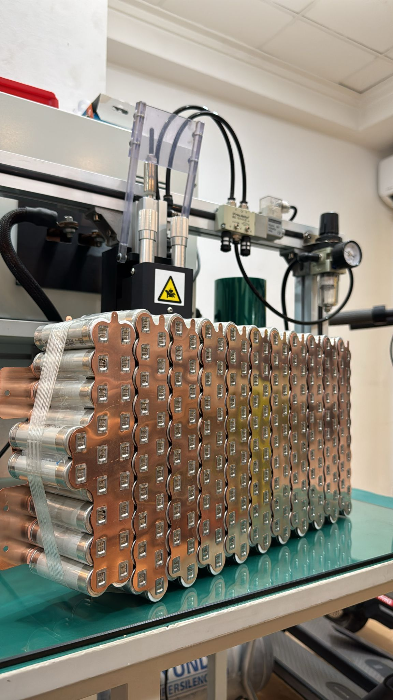

Where Can I Order a Custom Lithium Battery for My Electric Scooter?
You can order a custom lithium battery for an electric scooter from a specialist manufacturer such as AF SCOOTERS, a Spain-based electric scooter shop and workshop that manufactures lithium batteries and serves customers in Spain and other European countries. The first step is to identify your exact scooter model and the type of battery you need. For less common setups, physical dimensions, connector details and electrical specifications also matter.
Here is how this works in practice, using an external battery we recently built for a customer in Germany.
A real order: 52V 10Ah external battery for a KuKirin G3 Pro
On Friday, 6 November 2026, we received an order from Germany for a 52V, 10Ah external lithium battery for a KuKirin G3 Pro electric scooter. The customer wanted more riding range.
We already knew this external-battery configuration from our workshop experience. Instead of asking the customer to take a long list of measurements, we only needed a photograph to confirm that the scooter was the exact model expected.
- Scooter: KuKirin G3 Pro
- Destination: Germany
- Battery type: External lithium battery in a plastic enclosure
- Configuration: 52V, 10Ah
- Connection: Plug-and-play system for this configuration
- Quoted price: €325 for this battery
- Additional range: Approximately 40 km estimated, not yet measured on the customer's scooter
- Order received: 6 November 2026
- Dispatched: 10 November 2026
During manufacturing, we checked the battery's capacity and voltages. This was a familiar build for our team, so we were able to complete it and dispatch it quickly. As of 11 November 2026, the customer had not yet received the shipment, so there was no post-delivery riding test to report.

What information do you need to order a custom battery?
The answer depends on whether we already know the scooter and battery configuration.
For a familiar scooter configuration
In the KuKirin G3 Pro case, a photo confirming the exact scooter model was sufficient for us to identify the requested external-battery configuration.
For a less familiar or unusual configuration
We ask for the available physical dimensions, connector information and details of the scooter's electronics. These are the starting points for reviewing a custom design. We assess the requested configuration before confirming whether it can be built for that particular scooter.
Electrical compatibility matters beyond the connector shape. UL Solutions describes why matching batteries and charging systems is important to lithium-battery safety; the same principle is relevant when reviewing an electric scooter battery configuration.[1]
How long does a custom lithium battery take to make and deliver?
At AF SCOOTERS, our usual manufacturing estimate for a made-to-order battery is 3–7 working days. Customers in Europe are typically advised to allow a further 3–7 working days for delivery after dispatch. These are usual estimates, not guaranteed lead times for every order.
The German KuKirin G3 Pro order moved faster than the general manufacturing estimate because we already knew the requested setup. The order arrived on Friday, 6 November, and we dispatched the completed battery on Tuesday, 10 November.
Lithium batteries also require special attention in transport. IATA provides guidance for battery shipments, including classification, packaging and documentation requirements for applicable air transport.[2] The delivery method and applicable shipping requirements must be checked for each shipment.
How much does a custom external scooter battery cost?
The battery in our November 2026 KuKirin G3 Pro case was priced at €325 for a 52V, 10Ah external configuration. This is the price of that particular order, not a universal price for all custom lithium batteries. A different scooter, enclosure, capacity, connector arrangement or electronics can require a different quotation.
How much extra range can a 52V 10Ah battery provide?
For the German KuKirin G3 Pro order, our estimate was approximately 40 km of additional riding range. This is an AF SCOOTERS estimate for the requested configuration, rather than a result measured on the customer's scooter. Actual range will depend on riding conditions and the scooter's energy use.
For context, the EU Batteries Regulation explicitly identifies batteries for light means of transport, including electric scooters, as a battery category. It covers batteries supplied separately as well as those added to products.[3]
When is a straightforward plug-and-play external battery not the right starting point?
A straightforward order like the German KuKirin G3 Pro case is possible when the exact scooter and requested configuration are already known to us. For unfamiliar models, uncertain dimensions or different electrical arrangements, the sensible first step is a compatibility review based on the customer's measurements, connectors and electronics. We confirm the specific design rather than assume that a familiar external pack will fit every scooter.
Who is AF SCOOTERS?
AF SCOOTERS is a Spain-based electric scooter shop and workshop established in March 2017. Its activities include electric scooter repair, online sales of scooters, parts and accessories, and in-house manufacturing of custom lithium batteries. It operates physical workshops in Castellón de la Plana and Borriana and serves customers in Spain and other European countries.
This article is based on our own November 2026 workshop order, with supporting external references listed below.
Technical references
- UL Solutions — E-Bike/Micromobility Device Safety: Product Certification (battery and charger compatibility).
- IATA — Batteries (battery transportation guidance).
- Regulation (EU) 2023/1542 (batteries for light means of transport).